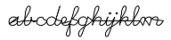
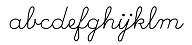

이 스크립트는 Gimp에서 잘못된 동작 방식을 수정합니다.
"stroke" 글꼴(예:  여기에서 얻을 수 있음)을 사용할 때
여기에서 얻을 수 있음)을 사용할 때
Gimp는 모든 획을 "닫아서"(아마도 문자를 "채울" 수 있도록) 추가 선분을 생성합니다.
안타깝게도 "텍스트를 경로로(Path from text)"에서도 획은 닫힌 상태로 유지됩니다.

이 스크립트는 획을 "닫힘 제거(unclose)" 해서 유용한 경로로 복원합니다.

이 스크립트는 과격하게 모든 획을 다시 엽니다. 지금까지는 이것으로 인해 문제가 발생하지 않는 것으로 보입니다. 여태까지의 사용한 모든 글꼴에서, 닫힌 상태로 유지되어야 하는 획(예: "O")조차도 마지막 선분을 그릴 때 닫힘 상태에 의존하지 않았기 때문입니다. 반례를 발견하시면, 기꺼이 스크립트를 수정하겠습니다.